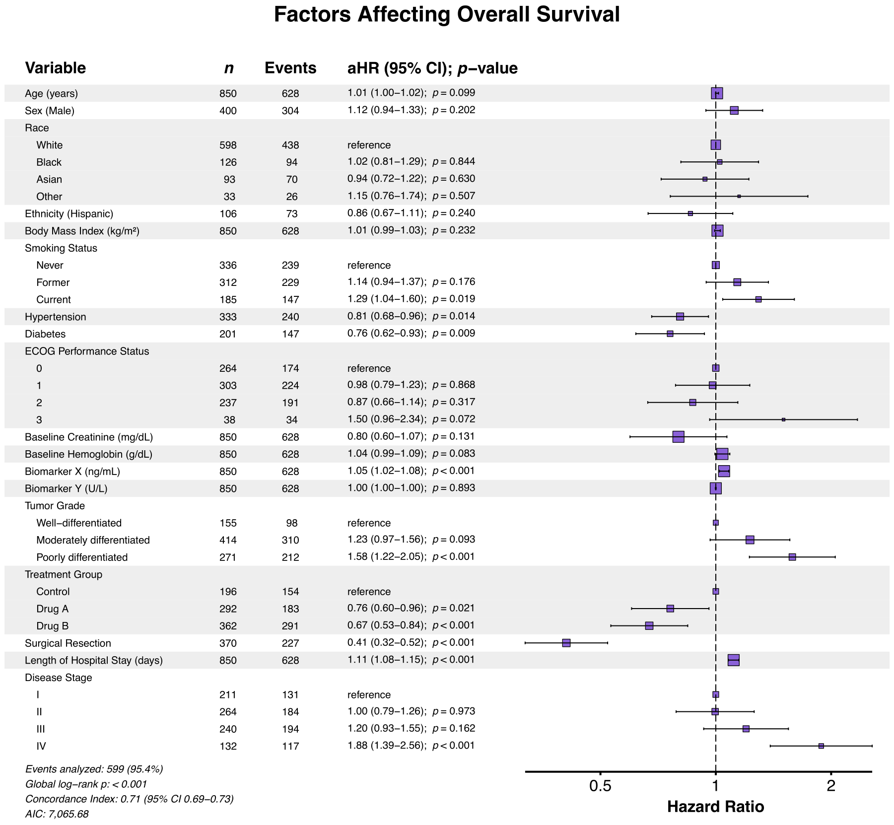
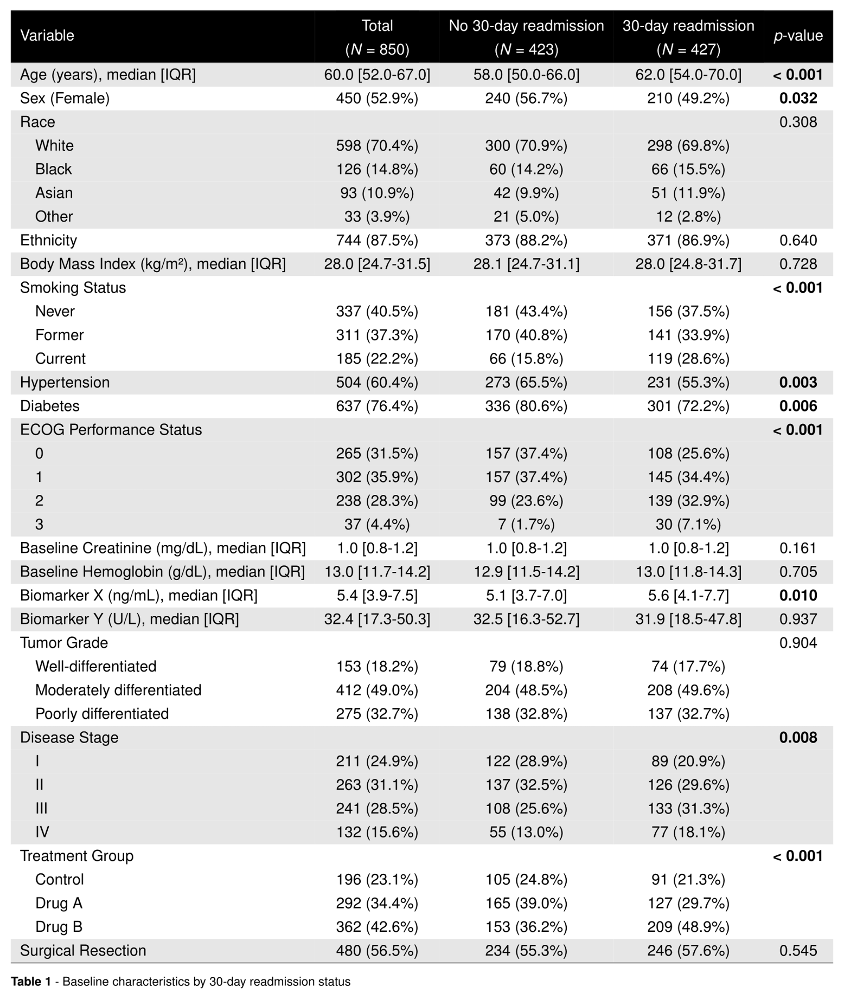
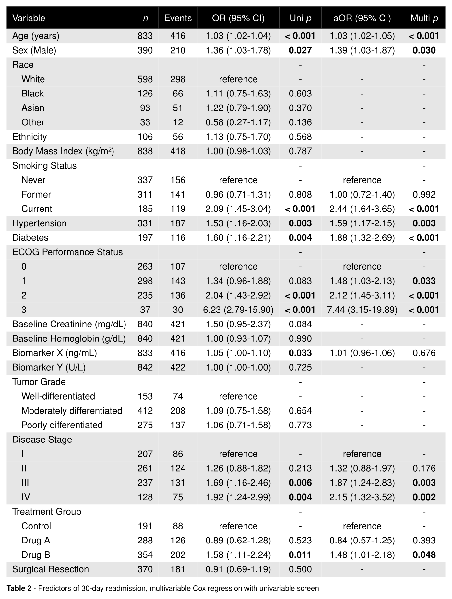
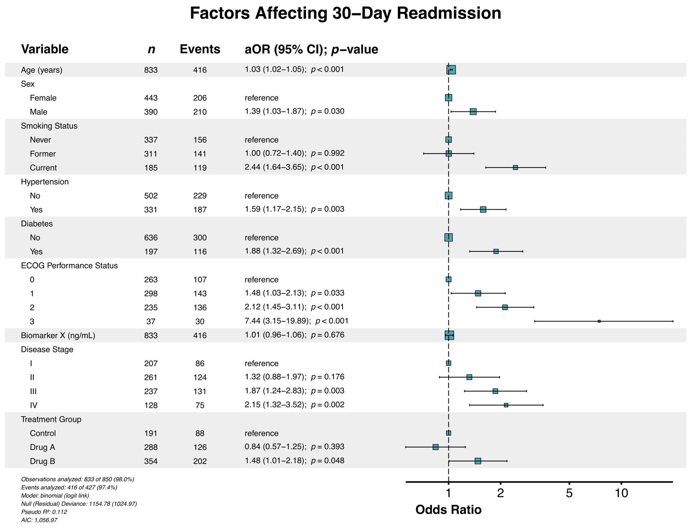

summata | /suːˈmɑːtə/ | Latin, n. pl. of summātum, gerundive of summāre: those that have been summarized
Concise, publication-ready statistical summaries.
Overview
The summata package provides a comprehensive framework for generating summary tables and visualizations from statistical analyses. Built on data.table for computational efficiency, it streamlines the workflow from descriptive statistics through regression modeling to final output—all using a unified interface with standardized, presentation-ready results.

Installation
The package may be installed from GitHub (stable) or Codeberg (development):
# Stable release
devtools::install_github("phmcc/summata")
# Development version
devtools::install_git("https://codeberg.org/phmcc/summata.git")Package Composition
Design Principles
The architecture of summata reflects three guiding principles:
Consistent syntax. All modeling functions share a common signature: data first, followed by the outcome or variable of interest, then additional covariates. This convention facilitates both pipe-based workflows and pedagogical clarity.
Transparent computation. Functions attach their underlying model objects and raw numerical results as attributes, permitting verification of computations or extension of analyses beyond the formatted output.
Separation of concerns. Analysis, formatting, and export constitute distinct operations, allowing each stage to be modified independently.
These principles manifest in the standard calling convention:
Supported Model Classes
The package provides unified handling for the following regression models:
| Model Class | Function | Effect Measure |
|---|---|---|
| Linear regression | stats::lm() |
β coefficient |
| Logistic regression | stats::glm() |
Odds ratio |
| Poisson regression | stats::glm() |
Rate ratio |
| Cox proportional hazards | survival::coxph() |
Hazard ratio |
| Conditional logistic | survival::clogit() |
Odds ratio |
| Linear mixed effects | lme4::lmer() |
β coefficient |
| Generalized linear mixed effects | lme4::glmer() |
Odds/rate ratio |
| Cox mixed effects | coxme::coxme() |
Hazard ratio |
Functional Reference
Primary Analysis Functions
The core analytical functions implement standard statistical workflows:
| Function | Purpose |
|---|---|
desctable() |
Descriptive statistics with stratification and hypothesis testing |
survtable() |
Survival probability estimates at specified time points |
uniscreen() |
Systematic univariable analysis across multiple predictors |
fit() |
Single regression model with formatted coefficient extraction |
fullfit() |
Integrated univariable screening with multivariable regression |
compfit() |
Nested model comparison with likelihood ratio tests and information criteria |
multifit() |
Single predictor evaluated against multiple outcomes |
Export Functions
Tables may be rendered to multiple output formats:
| Function | Format | Dependency |
|---|---|---|
autoexport() |
Auto-detect from file extension | Varies |
table2pdf() |
xtable, LaTeX distribution | |
table2docx() |
Microsoft Word | officer, flextable |
table2pptx() |
Microsoft PowerPoint | officer, flextable |
table2html() |
HTML | xtable |
table2tex() |
LaTeX source | xtable |
table2rtf() |
Rich Text Format | officer, flextable |
Visualization Functions
Forest plots may be generated directly from model objects or analysis results:
| Function | Application |
|---|---|
autoforest() |
Automatic model class detection |
lmforest() |
Linear models |
glmforest() |
Generalized linear models |
coxforest() |
Proportional hazards models |
uniforest() |
Univariable screening results |
multiforest() |
Multi-outcome analysis results |
Comparison with Related Packages
The R ecosystem includes several established packages for regression table generation. The following comparison identifies areas of overlap and distinction:
| Capability | summata | gtsummary | finalfit | arsenal |
|---|---|---|---|---|
| Descriptive statistics | ✓ | ✓ | ✓ | ✓ |
| Survival summaries | ✓ | ✓ | ◐ | — |
| Univariable screening | ✓ | ✓ | ✓ | ✓ |
| Multivariable regression | ✓ | ✓ | ✓ | ✓ |
| Multi-format export | ✓ | ✓ | ✓ | ✓ |
| Integrated forest plots | ✓ | ◐ | ✓ | — |
| Model comparison | ✓ | ✓ | ◐ | — |
| Mixed-effects models | ✓ | ◐ | ◐ | — |
| Multi-outcome analysis | ✓ | — | — | — |
✓ Full support | ◐ Partial support | — Not available
A detailed feature comparison is available in the package documentation.
Illustrative Example
The clintrial dataset included with this package provides simulated clinical trial data comprising patient identifiers, baseline characteristics, therapeutic interventions, short-term outcomes, and long-term survival statistics. In the following example, we analyze perioperative factors affecting 30-day hospital readmission:
Data Preparation
First, load the dataset, apply labels, and define predictors:
library(summata)
# Load example data
data("clintrial")
data("clintrial_labels")
# Define candidate predictors
predictors <- c("age", "sex", "race", "ethnicity", "bmi", "smoking",
"hypertension", "diabetes", "ecog", "creatinine",
"hemoglobin", "biomarker_x", "biomarker_y", "grade",
"treatment", "surgery", "los_days", "stage")Step 1: Descriptive Statistics
Use the desctable() function to generate summary statistics with stratification by a grouping variable (in this case, 30-day readmission):
table1 <- desctable(
data = clintrial,
by = "readmission_30d",
variables = predictors,
labels = clintrial_labels
)
table2pdf(table1, "table1.pdf",
caption = "\\textbf{Table 1} - Baseline characteristics by 30-day readmission status",
paper = "auto",
condense_table = TRUE,
dark_header = TRUE,
zebra_stripes = TRUE
)Figure 1. Descriptive statistics table

Step 2: Regression Analysis
Perform an integrated univariable-to-multivariable regression workflow using the fullfit() function:
table2 <- fullfit(
data = clintrial,
outcome = "readmission_30d",
predictors = predictors,
method = "screen",
p_threshold = 0.05,
model_type = "glm",
labels = clintrial_labels
)
table2pdf(table2, "table2.pdf",
caption = "\\textbf{Table 2} - Predictors of 30-day readmission, multivariable Cox regression with univariable screen",
paper = "auto",
condense_table = TRUE,
dark_header = TRUE,
zebra_stripes = TRUE)Figure 2. Logistic regression with univariable screening

Step 3: Forest Plot
Finally, generate a forest plot to provide a graphical representation of effect estimates using the glmforest() function:
forest_30d <- glmforest(table2,
title = "Factors Affecting 30-Day Readmission",
labels = clintrial_labels,
indent_groups = TRUE
)
ggsave("forest_30d.pdf", forest_30d,
width = attr(forest_30d, "recommended_dims")$width,
height = attr(forest_30d, "recommended_dims")$height,
units = "in")Figure 3. Multivariable GLM forest plot

Development
Repository
- Primary development: codeberg.org/phmcc/summata
- GitHub mirror: github.com/phmcc/summata
Contributing
Bug reports and feature requests may be submitted via the issue tracker. Contributions are welcome; please consult the contributing guidelines prior to submitting pull requests.
Acknowledgments
The design of summata draws inspiration from several existing packages:
-
finalfit (Harrison) — Regression workflow concepts
-
gtsummary (Sjoberg et al.) — Table generation architecture
-
arsenal (Heinzen et al.) — Descriptive statistics methodology
- data.table (Dowle & Srinivasan) — High-performance data operations
Citation
citation("summata")
To cite summata in publications, use:
McClelland PH (2026). _summata: Publication-Ready Summary Tables and Forest Plots_. R package version 0.9.5, <https://phmcc.github.io/summata/>.
A BibTeX entry for LaTeX users is
@Manual{,
title = {summata: Publication-Ready Summary Tables and Forest Plots},
author = {Paul Hsin-ti McClelland},
year = {2026},
note = {R package version 0.9.5},
url = {https://phmcc.github.io/summata/},
}Further Resources
-
Function documentation:
?function_nameor the reference index -
Vignettes:
vignette("summata")or online articles - Issue tracker: Codeberg Issues
The summata package is under active development. The API may change prior to CRAN submission.